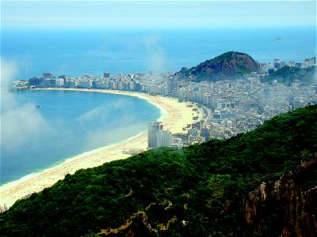
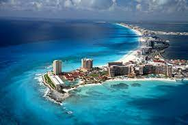
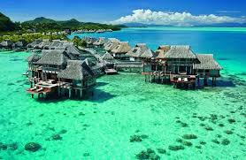
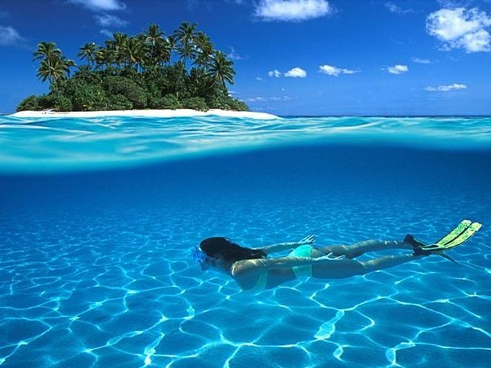
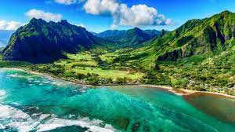
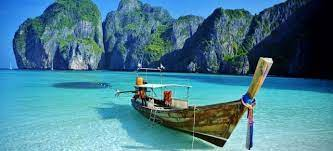
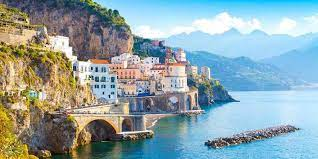
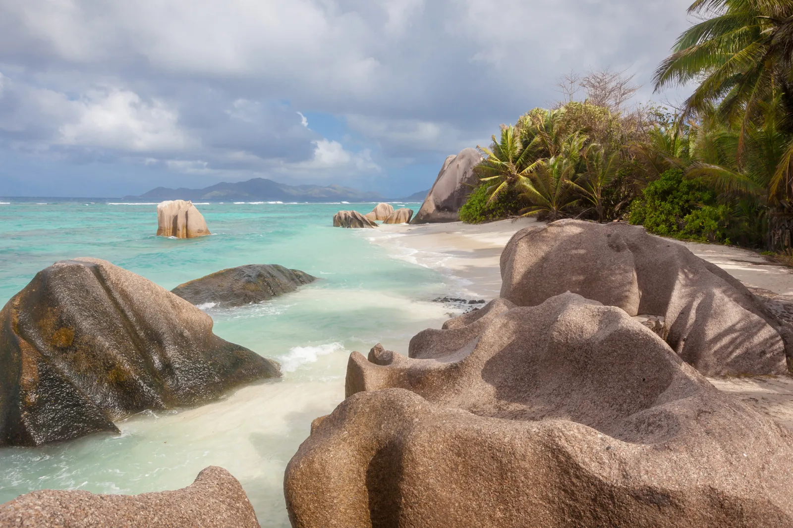
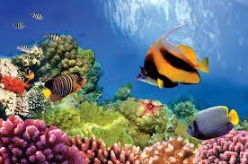

¡Viajar es una experiencia maravillosa!
Explorar nuevos destinos, sumergirse en diferentes culturas y descubrir paisajes impresionantes es una fuente de enriquecimiento personal.
Viajar nos brinda la oportunidad de crear recuerdos inolvidables, abrir nuestra mente y ampliar nuestra perspectiva del mundo.
Así que prepárate para embarcarte en aventuras emocionantes y descubrir todo lo que el mundo tiene para ofrecer. ¡El viaje comienza ahora!

Playa de Copacabana, Río de Janeiro, Brasil:
Una icónica playa en Río de Janeiro, conocida por su famoso paseo marítimo y su vibrante vida nocturna.

Cancún, México:
Un destino turístico popular con playas de arena blanca y aguas cristalinas, ideal para practicar deportes acuáticos y relajarse bajo el sol.

Bora Bora, Polinesia Francesa:
Una isla paradisíaca rodeada de aguas turquesas y arrecifes de coral, famosa por sus lujosos complejos hoteleros y bungalows sobre el agua.

Islas Maldivas:
Un archipiélago de ensueño con playas de arena blanca, aguas cristalinas y una increíble vida marina para bucear y hacer snorkel.
Ibiza, España:
Una isla balear famosa por su animada vida nocturna, hermosas playas y calas tranquilas, así como por sus clubes de música electrónica.

Hawái, Estados Unidos:
Un paraíso tropical con playas impresionantes, volcanes activos, cascadas exuberantes y una cultura rica y diversa.

Phi Phi Island, Tailandia:
Un archipiélago de islas en el mar de Andamán, conocido por sus playas de arena blanca, aguas cristalinas y espectaculares formaciones rocosas.

Costa Amalfitana, Italia:
Una impresionante costa en el sur de Italia, famosa por sus pintorescos pueblos costeros, acantilados escarpados y vistas panorámicas al mar.

Seychelles:
Un destino de ensueño en el océano Índico, con playas de arena blanca bordeadas de palmeras, aguas turquesas y una abundante vida marina.

Great Barrier Reef, Australia:
El arrecife de coral más grande del mundo, ubicado frente a la costa de Queensland, Australia. Ofrece una increíble biodiversidad marina y oportunidades para bucear y hacer snorkel